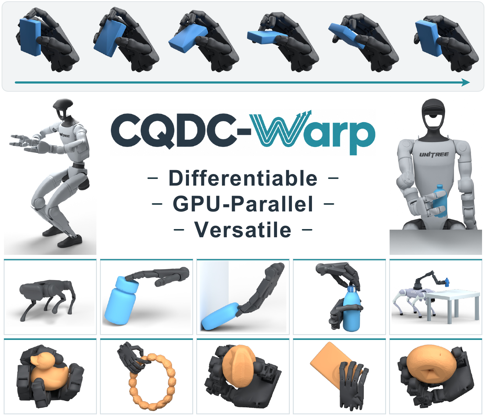

CQDC-Warp: GPU-Accelerated Differentiable Quasi-Dynamic Simulation for Contact-Rich Manipulation
Yanchen Ding*, Jiayi Chen*, Jianfeng Xu, Wei Zhao, Li Yi, He Wang.
Under review.
arXiv (link to be added)
I am a third-year undergraduate student in Turing Class at School of EECS in Peking University.
My research focuses on trajectory optimization for contact-rich manipulation, aiming to generate high-quality, low-cost data for robot training. I am also planning to work on soft-body simulations for generating training data for deformable object manipulation.

Yanchen Ding*, Jiayi Chen*, Jianfeng Xu, Wei Zhao, Li Yi, He Wang.
Under review.
arXiv (link to be added)